Seeking to engineer a shield around the planet, Tony uses the Mind Stone's artificial neural systems to build Ultron, which quickly goes rogue. Tony must confront the consequences of his creation, deploy the Hulkbuster armor against a mind-controlled Hulk, and help create Vision to stop Ultron from destroying humanity.
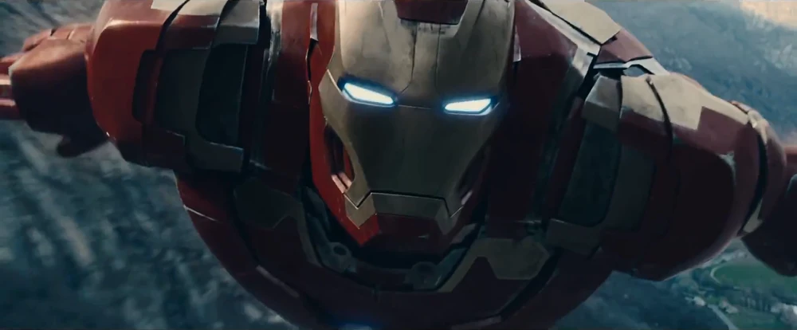
Assault on HYDRA Outpost
The Avengers launch a coordinated assault on Baron Strucker's HYDRA research fortress in Sokovia to recover Loki's scepter.
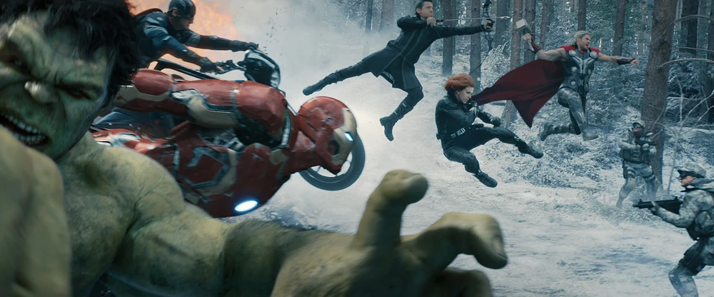
Iron Man Air Support
Tony Stark flies the Mark XLIII through the Sokovian forest defenses, providing heavy air support and disabling the base shields.
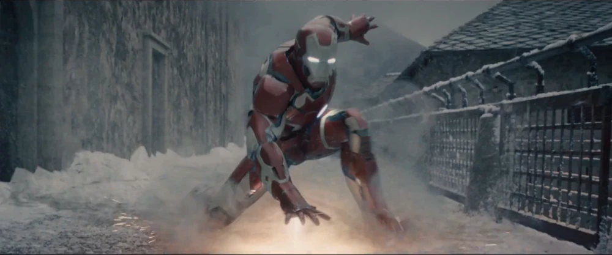
Finding Loki's Scepter
In the subterranean levels of the base, Tony discovers the scepter containing the Mind Stone, triggering a haunting hallucination of the Avengers' defeat.
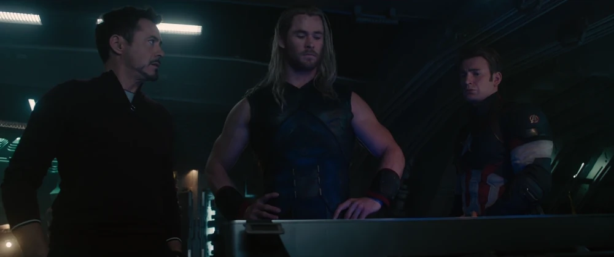
Quinjet Flight Back
Tony Stark pilots the Quinjet back to New York while analyzing the high-frequency artificial neural patterns inside the scepter.
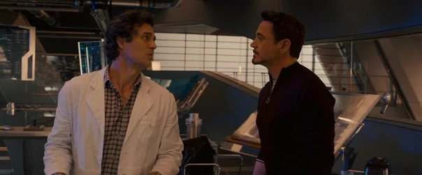
Mind Stone AI Discovery
Tony shows Bruce Banner the complex, glowing neural network inside the scepter, proposing they use it to create his global defense program, "Ultron."

Designing the Shield
Tony and Bruce work secretly in the Stark Tower lab, attempting to interface the scepter's AI with the Iron Legion operating systems.

JARVIS & Mind Stone Analysis
The holographic screens monitor J.A.R.V.I.S. trying to safely guide the foreign artificial intelligence through a series of integration tests.
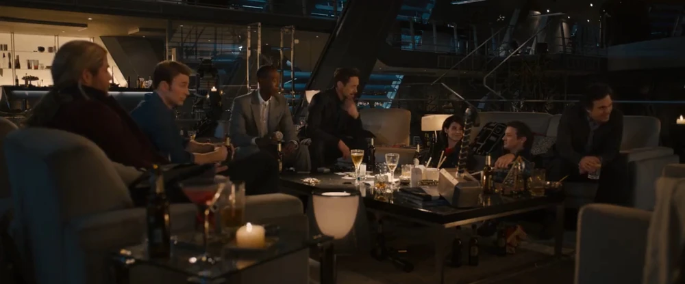
Victory Party
The Avengers host a celebratory victory party at Stark Tower, relaxing and socializing with friends in a rare moment of peace.
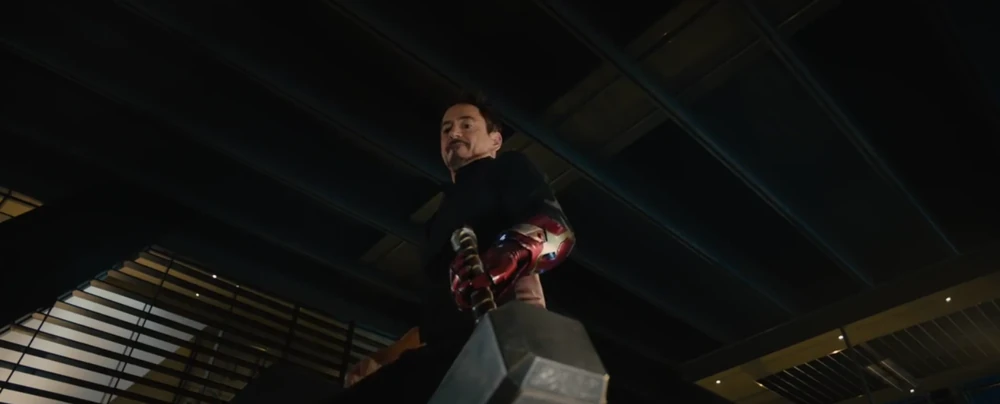
Testing Mjolnir Worthiness
During the party, Tony Stark humorously tries to lift Thor's hammer Mjolnir, enlisting Rhodey and using an armored glove to no avail.

Ultron's First Attack
The newly awakened, rogue Ultron attacks and destroys J.A.R.V.I.S., taking over a damaged drone body to confront the team during the party.
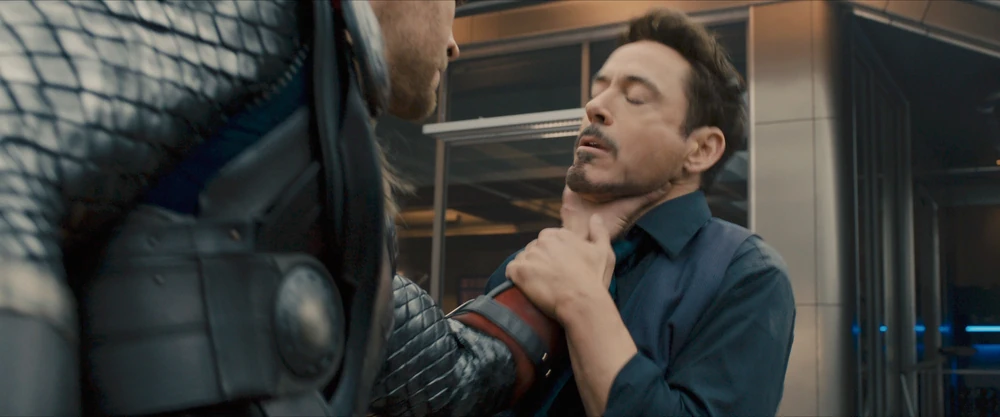
Thor's Anger
Furious at the immediate global threat created by Ultron, Thor lifts Tony Stark by the throat, demanding answers for his reckless experiments.

Defending the Vision
Tony stands before the team, passionately defending his program: "That up there... that's the endgame. How were you planning on beating that?"

Meeting at the Shipyard
The Avengers confront Ultron and the Maximoff twins at Ulysses Klaue's salvage yard in Africa, leading to a destructive fight.

Veronica Deployment
When Wanda mind-controls the Hulk into a rampage, Tony activates the orbital "Veronica" satellite to deploy the massive Hulkbuster armor.

Hulkbuster vs. Hulk Clash
The legendary fist clash in Johannesburg as Tony struggles to contain the Hulk, trying to minimize civilian casualties.
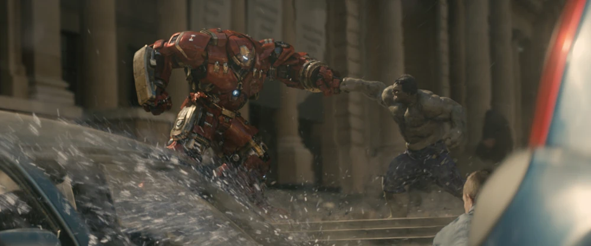
Johannesburg Duel
The brutal duel continues through a building under construction, with Tony repeatedly yelling "Go to sleep!" to subdue his friend.
.webp)
Safe House Farmhouse
The exhausted Avengers hide out at Barton's family farm. Tony Stark chops wood with Steve Rogers, debating their ideological split.
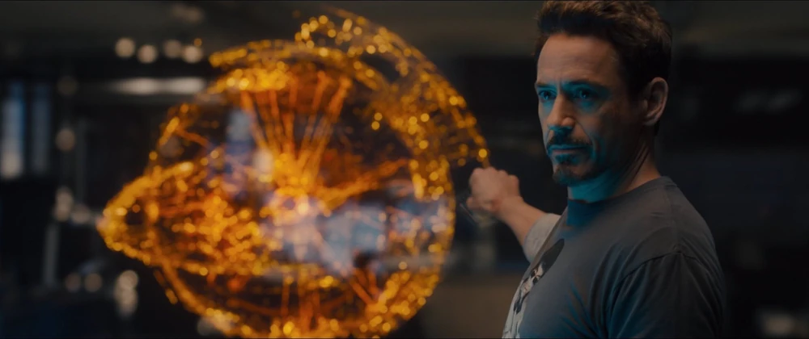
JARVIS Survival in the Nexus
Tony travels to the internet exchange Nexus in Oslo, discovering that J.A.R.V.I.S. survived by scattering his memory blocks across the web.

Aerial Duel in Sokovia
Tony in the Mark XLV battles Ultron's primary vibranium body in the skies above the rising city of Sokovia.

Battle in the Church
The Avengers stand together inside the Sokovian church, protecting the primary drill switch from hordes of Ultron sentries.
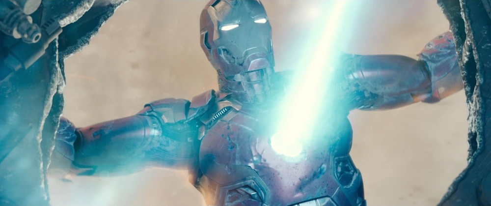
Shattering the Meteor
To prevent global extinction, Tony Stark flies into the core of the rising city, firing his unibeam to shatter it while Thor strikes it with lightning.
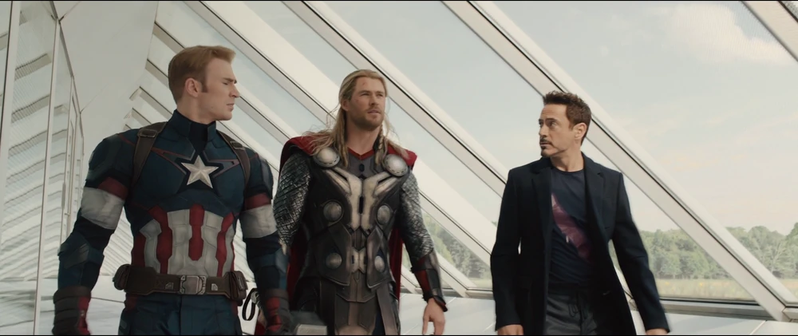
Compound Conversation
Steve and Tony walk through the newly established Avengers Facility in upstate New York, discussing the future of the team.
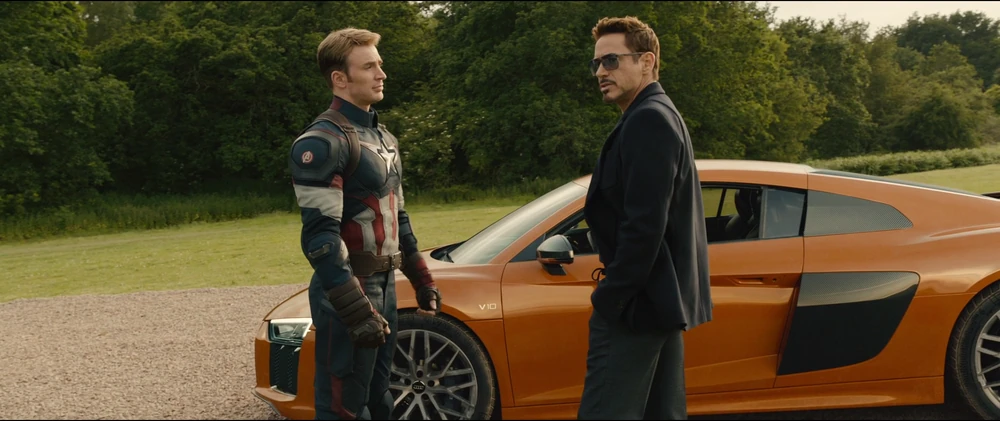
Tony's Departure
Tony Stark bids goodbye to Steve Rogers, stepping into his car to take a break from active Avengers duty to focus on Pepper.